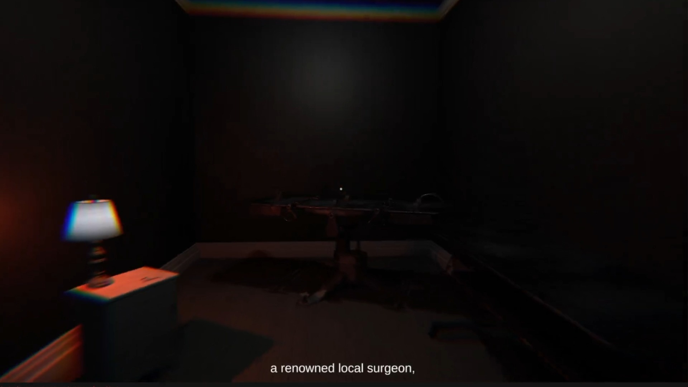
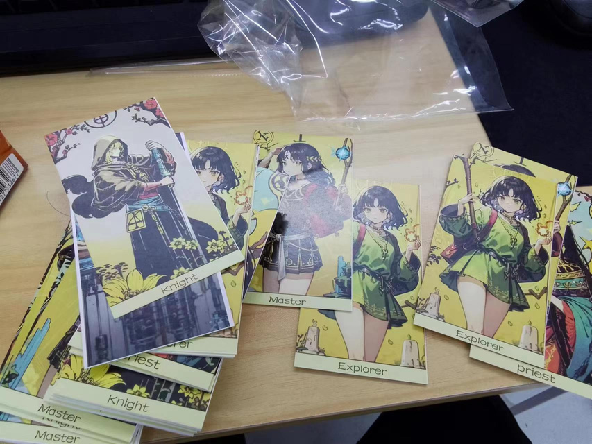
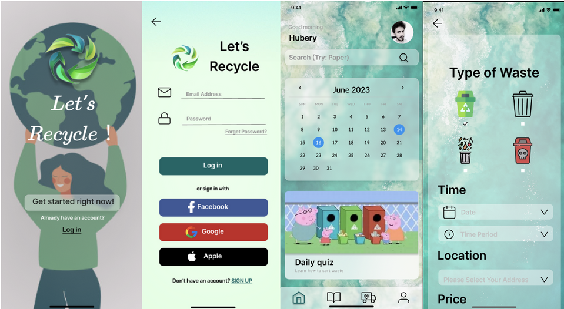

牙科焦虑干预 VR
结合用户研究与参与式设计，用 Unity / Quest 3 实现 5 类事件触发场景，开展 24 人随机研究。
在 AI 的能力与人的体验之间，
构建可用、可玩的交互。
香港中文大学（深圳）人工智能 MPhil 在读，聚焦 HCI、语音模型评测与生成。我把用户研究与系统开发连接起来，用 Unity / Quest 3 构建交互体验，也参与 AI 模型研究、数据构建与评测。
寻找游戏 AI / Agent 开发及 AI 应用方向实习。日常实习优先，近期可入职。
结合用户研究与参与式设计，用 Unity / Quest 3 实现 5 类事件触发场景，开展 24 人随机研究。
参与构建覆盖 9 类场景、270 段对话的多轮语音评测数据，分析模型表现与 LLM 评审偏差。
面向可控病理语音生成，参与数据构建、自动质检与模型研究；生成 25 小时、6,200 条语音。
Game Off 2024 独立参赛作品。将 ESC 设置与游戏世界变化关联，完成从关卡白盒到打包测试。

DEMO FILM · 12:00开发 AI 智慧校园图灵测试小程序，为已录用会议论文提供 200+ 用户数据。参与 AI 标准化病人研究，分析并提炼 6 类需求与 6 项设计要求。
完成跨文化主题的 3 个关卡调研、机制与流程设计，跟进评审迭代；开发、测试计算机视觉解谜原型。
研究方向：LLM / HCI、语音模型评测与生成。
年度奖学金（2022、2023）；全国大学生数学建模竞赛二等奖（2023）；MCM 荣誉奖（2023）；中国国际“互联网+”大学生创新创业大赛铜奖。

BOARD GAME合作策略桌游。4 名玩家与 1 名主持人共同参与，在限时逃脱中协作解谜、战斗与收集钥匙。

INTERACTION PROTOTYPE以 Figma 制作垃圾回收教育原型，通过界面与交互流程探索垃圾分类学习。
Python / PyTorch / Transformers
微调 / RAG / Prompt
模型部署、评测与数据质检
Unity / C# / C / C++
Quest 3 / OpenCV
关卡设计与 VR 原型
用户访谈 / 参与式设计
用户研究 / 模型评测
英语技术交流与写作